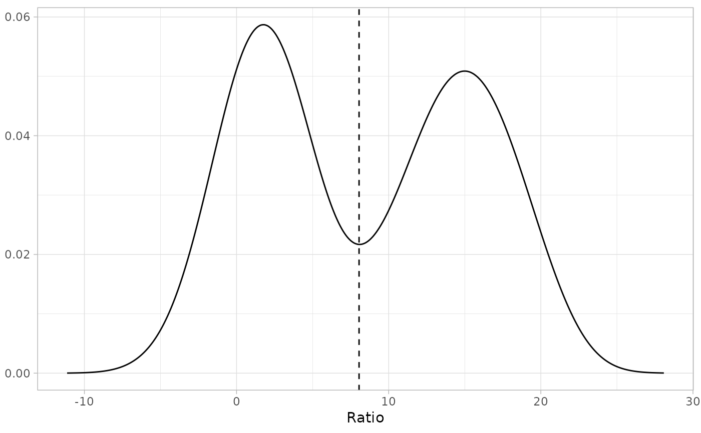

infl_pt() can be used to classify individuals as immature or mature
when there is a clear ratio of the y-axis variable to the x-axis variable
that separates the immature and mature clusters.
For example, this would be an effective classification method if the
transition to maturity of a population of Tanner crabs
(Chionoecetes bairdi) was evident by an increase in the
log(claw height)/log(carapace width) ratio from below 0.2 to above
0.2. infl_pt_fun() finds this discriminating line by creating a kernel
density estimate (visually similar to a smoothed histogram) of the
y-var/x-var ratio for all points, then finding the local minimum separating
the two peaks representing the maturity clusters.
Arguments
- dat
optional data frame or matrix containing the data
- x
Name of column (or integer or double vector) containing measurements for the x-axis variable (e.g., carapace width).
- y
Name of column (or integer or double vector) containing measurements for the y-axis variable (e.g., claw height).
- plot
Boolean; should a plot of the density curve with the identified minimum be created?
Value
An integer corresponding to the ratio (y/x) at which the local minimum was found. This ratio serves as the discriminant line when separating observations by maturity status.
Examples
library(ggplot2)
set.seed(12)
x <- rnorm(100, mean = 2, sd = 3)
y <- rnorm(100, mean = 15, sd = 3)
z <- c(x, y)
hist(z)
dat1 <- data.frame(xvar=rep(1, 200),yvar=z)
infl_pt(dat1, "xvar", "yvar", TRUE)

#> [1] 8.052694
fc <- fake_crabs(n=100, allo_params=c(1, 0.2, 1.1, 0.2))
infl_pt(fc, "x", "y", TRUE)
#> [1] 0.2562708